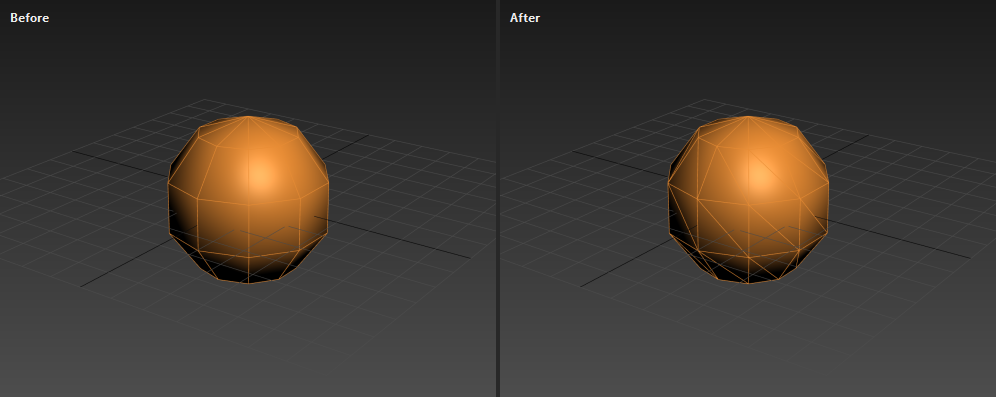
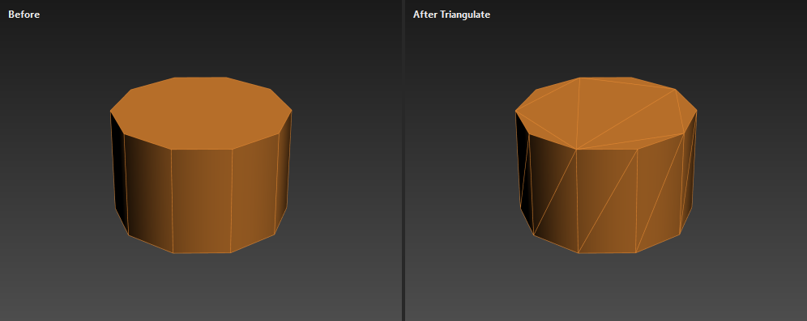
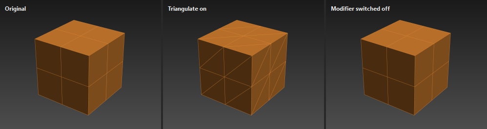

Tools / Triangulate
Triangulate
Add a Triangulate modifier to everything selected.
What it does
Triangulate adds a modifier to each selected object that breaks every polygon into triangles. Because it is a modifier, the original mesh stays untouched underneath.

How to use it
- Select one or more objects.
- In the right-click menu, choose Triangulate (right after Convert To).
- A message tells you how many objects got the modifier.


Good to know
- The modifier is named Triangulate and limits polygons to 3 sides, so you can switch it off or delete it at any time.
- Objects that cannot take the modifier are skipped.
- Undo is one step.